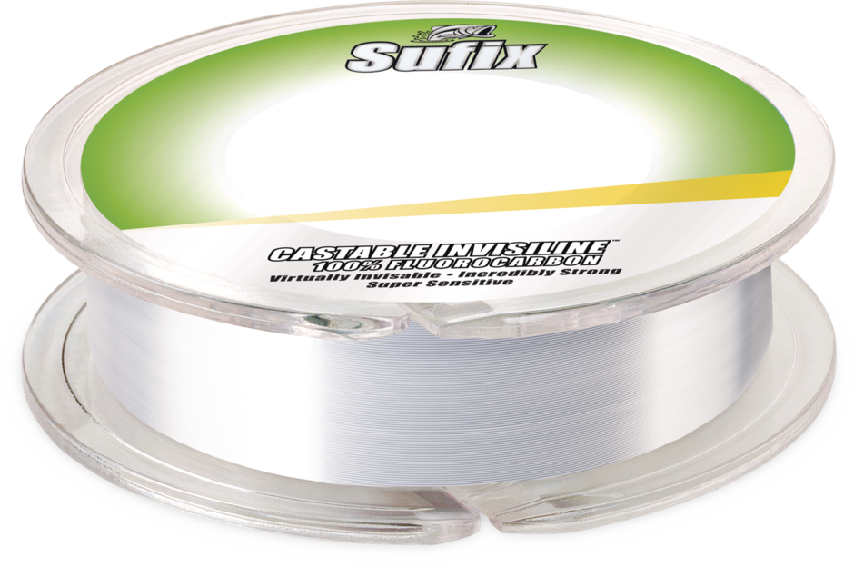

Sufix Castable Invisiline Fluorocarbon
Diameter chart, reel capacity & backing guide

Castable Invisiline is Sufix's 100% fluorocarbon main line for spinning and baitcasting reels. This guide covers Clear 4-20 lb on 100-yard spools. Invisiline Leader and Ice are separate products.
- Construction
- 100% fluorocarbon castable mainline with G2 Precision Winding
- Listed strengths
- 4-20 lb
- Line type
- Fluorocarbon main line
Does a 100-yard working supply fit your fishing?
Consider Castable Invisiline when fluorocarbon will be the line you cast, not merely a short terminal leader. Its verified 100-yard packages make working length and backing important decisions. Choose another continuous supply when your expected casts, depth or fish runs require more line than one package provides.
How much Castable Invisiline will fit?
Calculated estimates, not measured fills. Stop at the reel manufacturer's fill level even if some line remains.
Sufix Invisiline Fluorocarbon diameter chart
Included rows cover Clear 100-yard U.S. 680-9xxC product codes only. Inch diameters are manufacturer-published; millimeters are converted. No historical 200- or 600-yard offerings are included.
| Strength | Inches | mm | Spools (yd) |
|---|---|---|---|
| 0.007 | 0.1778 | 100 | |
| 0.008 | 0.2032 | 100 | |
| 0.009 | 0.2286 | 100 | |
| 0.011 | 0.2794 | 100 | |
| 0.012 | 0.3048 | 100 | |
| 0.013 | 0.3302 | 100 | |
| 0.016 | 0.4064 | 100 | |
| 0.017 | 0.4318 | 100 |
Choosing your Castable Invisiline strength
The 4, 6 and 8 lb sizes are listed at 0.007, 0.008 and 0.009 inch. These thinner choices use less spool volume per yard; match strength to the rod, lure and cover before comparing capacity.
The 10-14 lb sizes step from 0.011 to 0.013 inch. A 100-yard package remains 100 yards at each strength, but thicker line occupies more of the reel.
At 17 lb, Castable Invisiline is 0.016 inch, not the 0.015 inch listed for Advance Fluorocarbon. The 20 lb row is 0.017 inch. These heavier options merit a reel and rod suited to the thicker mainline.
Specification-based guidance, not a ReelCalc hands-on test. Manufacturer handling and low-stretch claims have not been independently measured here. Reel capacity is an estimate.
Want a guided recommendation?
Continue in the Setup WizardSame pound test, different diameters
At your selected strength
Loading diameter comparisons...
What changes with another line?
Nearby diameters in the line database
| Line | Strength | Inches | Difference |
|---|---|---|---|
| Loading line database... | |||
Backing, working line & leaders
Start with the working length
A 100-yard spool is a limited supply of castable mainline. Allow for normal casts or fishing depth, fish runs, knots and trimming before deciding whether one package is enough.
Fill unused volume with backing
Backing can occupy the part of the reel below the working fluorocarbon. Keep the connection below the line you expect to deploy; backing does not make a short working section adequate for long runs.
Check the exact package code
This guide uses Clear 680-9xxC 100-yard spools. Do not select 200 yards from the conflicting website size field, or treat several 100-yard spools as one uninterrupted length.
Respect the reel fill limit
Load under even tension and follow the reel maker's fill guidance. G2 Precision Winding describes the manufacturer's retail spooling process, not a guarantee of trouble-free handling on every reel.
How Much Fits on These Reels?
Estimated full-spool capacity for the Castable Invisiline strength selected above, with no backing. These are calculated examples, not physical tests or recommendations for every pairing.
Loading capacity estimates...
Castable Invisiline questions, answered
Is Castable Invisiline a leader-only product?
No. Sufix identifies this 100% fluorocarbon as castable mainline for spinning and casting reels. The separately named Invisiline Leader and Invisiline Ice products are not included.
Why does this guide use 100 yards when a website field says 200?
The exact 680-9xxC codes are identified as 100-yard spools in manufacturer catalogs. The current product page also gives 100 yards in its package and capacity fields and exact-product code image labels. Its contradictory 200-yard size field is not accepted for these codes; the source notes preserve the conflict.
Why are 17 and 20 lb supported differently from the lighter sizes?
The current 2026 catalog table lists 4-14 lb. The 17 and 20 lb rows remain on the current official product page, and their exact 680-917C and 680-920C 100-yard identities are documented in the 2018 manufacturer catalog. This supports their package specification, not a claim that they are currently in stock.
Is one 100-yard spool enough for my reel?
Only if it covers the required working length and reserve. Use the reel's capacity and exact diameter to plan backing, but do not rely on backing to compensate for insufficient working line on a long cast, deep drop or fish run.
Can I substitute Advance Fluorocarbon at the same pound test?
Not for a diameter-based calculation. For example, Castable Invisiline 17 lb is 0.016 inch while Advance Fluorocarbon 17 lb is 0.015 inch. Choose the actual model you will spool.
Are the millimeter diameters separately measured specifications?
No. This guide uses the published inch table and calculates millimeters as inches multiplied by 25.4. The extra converted digits do not imply greater manufacturing or measurement precision.
Specifications & sources
Checked September 13, 2026. The current official catalog confirms 4-14 lb at 100 yd. For 17 and 20 lb, the exact 100-yard product codes in the 2018 manufacturer catalog match current official product code fields and image labels. These sources take precedence over a contradictory 200-yard size field on the product page. Package specifications do not imply stock availability.
Calculations use the catalog's listed inch diameters. Published inch and millimeter values may differ slightly because of rounding.
- Official Sufix Castable Invisiline product page Current U.S. inch table and exact 680-9xxC variants. Two 100-yard fields and manufacturer image labels conflict with size_value=200 yd; catalog product code evidence resolves the accepted package.
- Official Rapala catalog hub Manufacturer-owned hub links the Normark 2026 Sufix Master Catalog, establishing the catalog publisher and current edition.
- 2026 Sufix Master Catalog Page image 14, Castable Invisiline specifications: six exact Clear 100-yard product codes from 4 to 14 lb; 10 lb package artwork also identifies 100 yd.
- 2018 Rapala VMC Sufix catalog, preserved PDF Manufacturer-authored catalog hosted as a PDF mirror, not a retailer-authored table. Page 10 identifies 680-917C and 680-920C as 100 yd and distinguishes the 200- and 600-yard product code families. Page 20 identifies Rapala VMC copyright. Used only with current exact-product code corroboration, not to import obsolete options.
- Official Advance Fluorocarbon comparison Comparison only: the distinct Advance Fluorocarbon 17 lb row is 0.015 inch. No Advance numeric row or package is imported into Castable Invisiline.